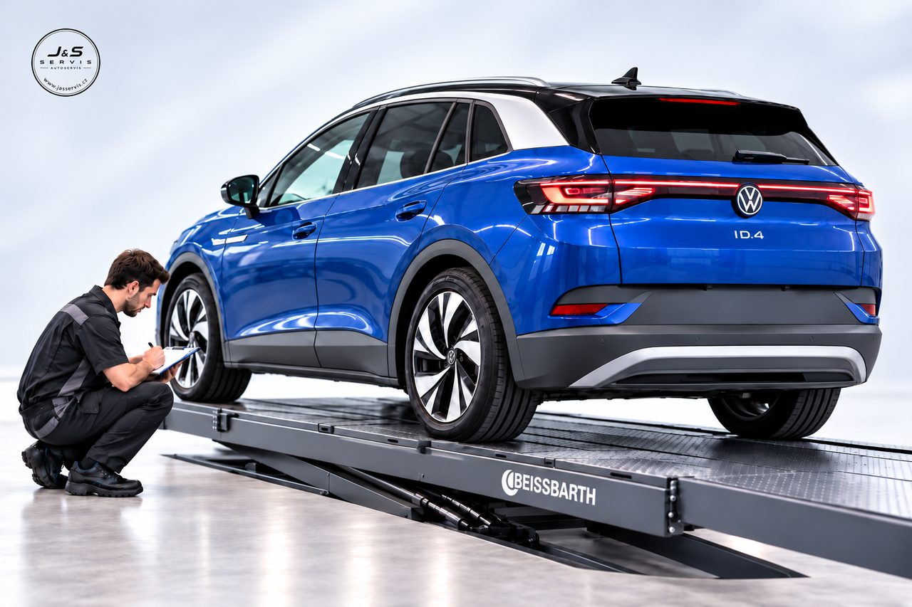

Підготовка та організація чеського огляду придатності до експлуатації (STK).

Перевірка автомобіля перед чеським техоглядом (STK)
Ми пропонуємо окрему перевірку автомобіля перед техоглядом. Її обсяг заздалегідь узгоджуємо для конкретного автомобіля. Перевірка може охоплювати освітлення, шини, гальма, кермове керування та підвіску. Про виявлені недоліки повідомляємо вам.
Окрема організація STK
Організація STK — окрема послуга згідно з прайс-листом. Вона включає запис, доставлення автомобіля на станцію та оплату техогляду й перевірки викидів, якщо вона потрібна для цього автомобіля. Попередня перевірка та організація STK — дві різні послуги.
Діагностика й можливий ремонт
Потрібний обсяг діагностики ODIS, додаткових вимірювань і можливого ремонту заздалегідь узгоджуємо з вами разом із ціною та переліком робіт, що входять до обраної послуги. Додаткові роботи виконуємо після погодження. Ми не нараховуємо плату повторно за вже включені роботи.
Під час запису погодимо передання автомобіля та потрібні документи. Ціни обох послуг наведені в прайс-листі.
Перед записом на обслуговування
Під час запису погодьте час передачі автомобіля та необхідні документи. Якщо попередня перевірка виявить потребу ремонту, його обсяг і ціну слід погодити до виконання; підготовка та подання автомобіля не гарантують позитивного результату техогляду.